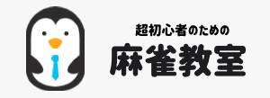
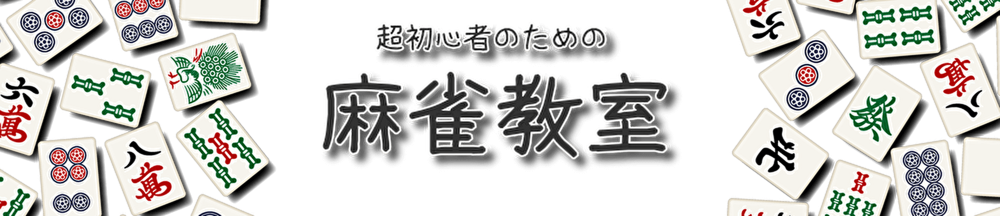

<!DOCTYPE html>
<html lang="ja">

<head>
  <meta charset="UTF-8">
  <title>Document</title>
  <link rel="stylesheet" href="style.css">
</head>

<body>
  <header>
    <div class="header-logo">
      <a href="index.html"></a>
    </div>
    <nav>
      <h1><a href="#">役一覧</a></h1>
      <h1><a href="#">用語解説</a></h1>
      <h1><a href="#">お問い合わせ</a></h1>
    </nav>
  </header>

  <div class="main-image">
    
  </div>

  <div class="main-contents">
    <div class="content">
      <h2>麻雀を最短で遊べるようになる手順</h2>
      <p>
        「麻雀をやってみたいけどルールが分からない」「初心者向けのサイトを見たけど専門用語が多くて諦めてしまった」。そんな方のために、できるだけ専門用語を使わずに、最短で麻雀を遊べるようになる手順をご紹介します。この手順に沿っていけば、「細かいルールまでは分からないけど、とりあえず麻雀で遊べる」ようになります。
      </p>

      <h2>手順① 麻雀のスマホアプリをダウンロードしよう</h2>
      <p>
        麻雀を遊ぶためには、雀荘に行って打つ、友達と打つなどの方法がありますが、初心者の方はまずネット麻雀から始めることをおすすめします。なぜなら、ネット麻雀であれば点数計算を自動で行ってくれる、成立している役を自動で判定してくれるなどの機能があり、初心者でも始めやすいためです。スマホアプリであれば「雀魂」がおすすめです。
      </p>

      <h2>手順② 14枚のコマで組み合わせを作ろう</h2>
      <p>麻雀は14枚のコマで組み合わせを作ることであがることができます。123や111の三兄弟が4組と、11や55などの双子が1組を作ることであがりとなります。
      </p>
      <div class="mahjong-tiles">
        
        <span>や</span>
        
        <span>を4組と、</span>
      </div>
      <span>を1組</span>
      <p>上図のような漢数字が書かれたコマの他にも、</p>
      <div class="mahjong-tiles">
        
      </div>
      <p>このような丸の図柄のものや</p>
      <div class="mahjong-tiles">
        
      </div>
      <p>このような棒が書かれた図柄のものがあり、それぞれ丸の数と棒の数が数字の大きさとなります（鳥の図柄は１です)。</p>
      <p>また、下図のような漢字一文字が書かれたコマと何も書かれていないコマも存在します。</p>
      <div class="mahjong-tiles">
        
      </div>
      <p>これらのコマは同じ図柄を揃えることでしか組を作ることはできません。</p>

      <h2>手順③ リーチを目指そう</h2>
      <p>リーチとは、あと一枚欲しいコマが来たらあがれる状態のことを言います。この状態になると、リーチというボタンが表示されて、リーチをすることができます。まずはリーチすることを目標に組み合わせを作っていきましょう</p>

      <h2>手順④ ツモやロンをしよう</h2>
      <p>リーチをしてから、誰かが自分の欲しい牌を捨てるか、自分で欲しい牌を引いてくるとあがることができます。誰かが捨てた場合は「ロン」、自分で引いてきた場合は「ツモ」が表示されるので押しましょう。</p>

      <h2>あがった後は</h2>
      <p>見事あがることができたら、牌の組み合わせによって点数が自動的に計算され、その点数が自分に加算されます。ここまでの手順を何回か繰り返し、この点数が一番多い人が勝ちとなるのです。</p>

      <h2>ポイント① ポンとチーはしない</h2>
      <p>ポンやチーが表示されることがありますが、ポンやチーをしてしまうとリーチができなくなってしまうため、初心者のうちはしないようにしましょう。</p>

      <h2>ポイント② 大きく字が書いてあるコマから捨てていこう</h2>
      <p>バラバラの状態からどのように揃えていけばいいか分からないという方は、まず字が大きく書かれているコマから捨てていきましょう。同じコマを揃えることでしか組を作れないため、使いづらいためです。</p>
    </div>

    
    <div class="side-bar">
      <h3>銀ペン</h3>
      <div class="image">
        
      </div>
      <p>
        ネット麻雀歴12年。小学生のとき父が買ってきたスーパーファミコンの麻雀ゲームを訳も分からず遊んでいました。それから時代とともにネットで麻雀ができるようになり、「天鳳」→「雀龍門」→「スマホの麻雀アプリ(色々)」とプレイしてきまして、現在は「雀魂」で遊んでいます。
      </p>
    </div>
  </div>

  <footer>
    <p><small>&copy; 2021 mahjong-kyoshitsu</small></p>
  </footer>

</body>

</html>